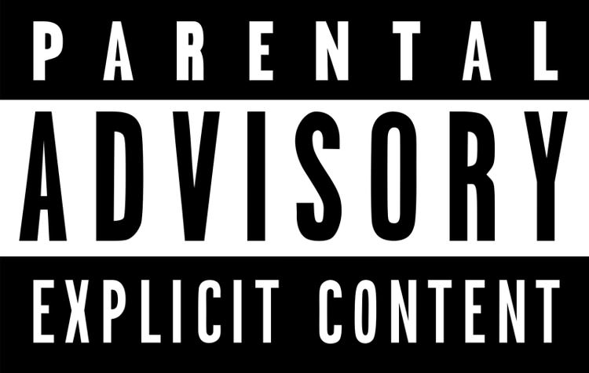
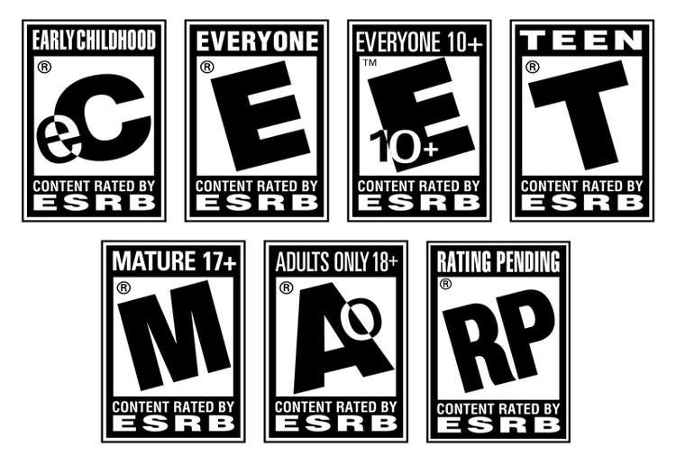

ESRB یا همان نظام ردهبندی بازیهای ویدیویی، سازمانی است که بازیهای ویدیویی را ردهبندی سنی میکند. با تاریخچه کوتاهی از این سیستم همراه باشید. بدون شک همه شما، هنگام خرید یک بازی پلیاستیشن 4 یا ایکسباکس وان، روی جعبه چشمتان به لوگویی خورده است که یکی از حروف الفبای انگلیسی است. این لوگوی سیاه سفید، معمولا در گوشه پایین جعبه بازی قرار گرفته است. اما آیا تا به حال به این فکر کردهاید که این لوگو چه چیزی را نشان میدهد؟ این لوگو، مربوط به سازمان نظام ردهبندی بازیهای ویدیوی یا ESRB است که وظیفه ردهبندی سنی بازیها را بر عهده دارد. هفته پیش بود که ESRB اعلام کرد که قصد دارد تغییراتی را در نحوه ردهبندی سنی بازیها اعمال کند. به این ترتیب، بازیهایی که دارای خریدهای درون برنامهای هستند، لوگوی خاصی رو جعبه آنها درج میشود. این اقدام ESRB، در راستای شکایات گیمرهایی بود که از وجود لوت باکسهای پولی بازیها شاکی بودند. این اولین باری نیست که ESRB نحوه ردهبندی کردن بازیها را تغییر میدهد. در این مطلب، به بیان تاریخچه مختصری از این سازمان پرداختهایم. تولد لوگو ردهبندی سنی در دهه ۸۰ میلادی، تیپر گور، یکی از موسسان سازمان Parents Music Resource Center بود. این سازمان اعتقاد داشت که تعدادی از محبوبترین آهنگهای خوانندههای آن دوران، به دلیل استفاده از الفاظ غیر مناسب، برای افراد کم سن و سال مناسب نیستند. این سازمان، فهرستی ۱۵ تایی از این آهنگها تهیه کرده بود که در میان آنها آهنگهایی از پرینس، شینا ایستون و جوداس پریست دیده میشد که همگی در زمره آهنگهای معروف و محبوب آن زمان بودند. این سازمان، اعتقاد داشت که ۱۵ آهنگ ذکر شده، برای افراد کم سن و سال مناسب نیستند و همین شد که در سال ۱۹۸۵، سازمان ملی صنعت ضبط آمریکا، لوگوهایی روی کاستهای این خوانندگان درج کرد. روی این لوگوها، عبارت Parental Advisory دیده میشد که نشان میداد محتوای درون آنها، برای افراد کم سن و سال مناسب نیست. ایده اصلی پشت این لوگو در آن زمان این بود که اگر صنعتی بتواند والدین فرزندانی را که از محصولات آن صنعت استفاده میکند، از محتویات درون آن محصول آگاه کند، به این ترتیب میتواند خود را از مشکلات حقوقی که دولت میتواند برای آن صنعت (در اینجا، صنعت موسیقی) ایجاد کند، رها کند. کم کم، این لوگوی سیاه و سفید به یک لیبل آشنا روی کاستها و سیدیها به خصوص روی آلبومهای رپ تبدیل شد و آمریکاییها نیز با این موضوع به راحتی کنار آمدند.
این مدل، الگویی برای صنعت بازیهای ویدیویی شد و به این ترتیب ۹ سال بعد یعنی در سال ۱۹۹۴، نظام ردهبندی بازیهای ویدیویی یا همان ESRB متولد شد. سازمان ESRB توسط انجمن نرمافزارهای سرگرمی که یک سازمان تجاری بود، تاسیس شد که شامل تعدادی از افراد مهم این صنعت میشد. اصلیترین وظیفه این سازمان، اعطای ردهبندی سنی به بازیها و اپلیکیشنها بود تا والدین از محتوای درون این نرمافزارها مطلع شوند. دقیقا مانند کاری که صنعت موسیقی، با آلبومهای موسیقی کرده بود اما با این تفاوت که لوگوهای روی بازیهای ویدیویی، شامل جزئیات بیشتری بود. هر چند که این نظام ردهبندی مانع این نشد که نوجوانان، بازیهایی را که برای سنشان مناسب نیست تجربه نکنند، اما حداقل باعث شد که والدین تا حدودی بتوانند از محتوای بازیهای ویدیویی فرزندانشان مطلع شوند. از طرف دیگر، خردهفروشهایی مانند والمارت و گیماستاپ هم مجبور شدند که کارمندان خود را به نحوی آموزش بدهند که با این لوگوها آشنا شوند و از فروش هر بازی به هر فردی، اجتناب کنند. ESRB در دنیای امروز باید این نکته را در نظر داشته باشید که دقیقا مانند RIAA (نظام ردهبندی آلبومهای موسیقی)، سازمان ESRB یک سازمان غیر دولتی و خود نظارتی است. ردهبندیهای ESRB دارای سه بخش هستند. بخش اول، دستهبندیهای اصلی هستند. این دستهبندیهای اصلی، به شکل زیر هستند: EC: که مخفف Early Childhood یا همان اوایل بچگی است E: که مخفف Everyone یا همان همه است و در ابتدا به صورت K-A یا همان از بچهها تا بزرگسالان نوشته میشد E 10+: که برای افراد بالاتر از ۱۰ سال مناسب است T: که مخفف Teen یا نوجوانان است M: که مخفف Mature و برای افراد بالاتر از ۱۷ سال مناسب است AO: که مخفف Adults Only است و نشانه این است که این بازی، فقط مناسب افراد بزرگسال است و به ندرت استفاده میشود
بخش دوم لوگوی ESRB، شامل توضیح محتویات است. این عبارات کوچک، در کنار ردهبندی سنی بازی به چشم میخورد. با استناد به توضیحات وبسایت رسمی ESRB، این توضیحات شامل اشاره به استفاده از الکل، نشان دادن خون، استفاده از الفاظ رکیک، استفاده از مواد مخدر و موارد دیگر میشود. آخرین بخش این نظام ردهبندی نیز که در سال ۲۰۱۳ به ESRB اضافه شد، با نام المانهای تعاملی شناخته میشود و بخشهای آن به شرح زیر هستند: In-Game Purchases یا خریدهای درون برنامهای: این لوگو، نشان میدهد که بازی دارای محتوایی است که شما میتوانید با پرداخت پول واقعی آنها را خریداری کنید. مراحل اضافه، پوستهها، آیتمهای شانسی، موسیقی، سکه مجازی، پرداخت پول برای از بین بردن تبلیغها، سیزن پس و دیگر موارد از جمله محتوا هستند. Users Interact یا تعامل کاربر: این عبارت، نشانگر این است که بازی میتواند شامل تعامل با دیگر کاربران باشد. مانند به اشتراک گذاری عکس یا فیلم توسط شبکههای اجتماعی یا ارتباط کاربر با کاربر. Shares Locations یا به اشتراکگذاری محل گیمر: این عبارت نشانگر این نکته است که محل کاربر با دیگر استفاده کنندگان از آن بازی به اشتراک گذاشته میشود. Unrestricted Internet یا دسترسی به اینترنت: این عبارت نشانگر این نکته است که بازی نیاز به اینترنت دارد. در طی سالها، تعداد بخشها و موارد مختلف این نظام، گسترش یافته است. در دهه ۹۰ میلادی، تنها ۲۲ دستهبندی وجود داشت که در حال حاضر، این عدد به ۳۴ دستهبندی رسیده است. ESRB چقدر موفق بوده است؟ اما سوال اصلی که در این میان مطرح است، این است که آیا این ردهبندی سنی، باعث میشود که افراد کم سن و سال بازیهای بزرگسالان را تجربه نکنند؟ در سالهای ۲۰۰۸، ۲۰۱۱ و ۲۰۱۳ تحقیقاتی توسط کمیسیون تجارت فدرال صورت گرفت که نشان میداد بله، این نظام ردهبندی سنی واقعا کار میکند. در تمام این تحقیقات، مشخص شد شانس اینکه فردی کم سن و سال بخواهد یک فیلم با ردهبندی بزرگسال را ببیند، دو برابر این است که بخواهد یک بازی با درجه M را خریداری کند. اما مهمترین چالش پیش روی ESRB، آموزش والدین آمریکایی در رابطه با لیبلها است. در حال حاضر، ESRB با خردهفروشیها، انجمن اولیا و مربیان (PTA)، سناتور هیلاری کلینتون و جوسف لیبرمن، مجلات مخصوص والدین و تیمهای مختلف ورزشی در حال همکاری است تا سطح آگاهی را نسبت به این نظام و بازیهای ویدیویی بالاتر ببرد. با تمام این اوصاف، به نظر میرسد تمام تلاشهای سازمان ردهبندی بازیهای ویدیویی، به دلیل اینکه دسترسی افراد کم سن و سال به محتویات غیر مناسب برای سنشان بسیار راحتتر است، با اینکه تا حدودی کار میکند، اما صد در صد موثر نیست و برای اینکه واقعا تمام افراد به این نظام احترام بگذارند، راه طولانی و سختی در پیش است. نظر شما در رابطه با نظام ESRB و به طور کلی ردهبندی فیلمها و بازیها چیست؟